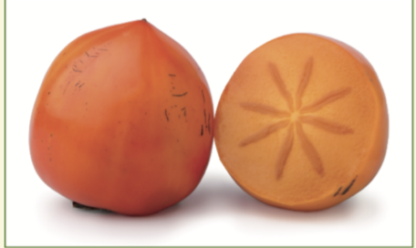
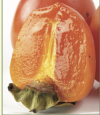

PERSIMMON
Firm, glossy, plump fruit, free from blemishes. Store: Ripen at room temperature. When ripe (see information on different varieties above), store non-astringent varieties in refrigerator up to 10-14 days, and astringent varieties up to 4-5 days. Serving suggestion: Eat fresh, use fresh slices in salads/desserts, or to accompany pork, lamb or chicken.
Why eat persimmons?
Persimmons are an excellent source of vitamin C and A; are ready to eat and taste fantastic! If you’ve never eaten persimmons before, why don’t you try them this season? We have previously discussed the importance of eating a variety of fruit and vegetables and trying new ones – persimmons are a great new fruit to try!Astringent varieties
• Soft and ripe.• Recommended varieties: Flat seedless, Hiratenshi, Hachiya, Tane-Nashi and Dai Dai Maru.
Non-astringent varieties
– referred to as Fuji fruit• Can be eaten crisp like an apple.
• Recommended varieties:Fuyu, Izu, Maekawa, Jiro, Matsumoto, Wase Fuyu
 